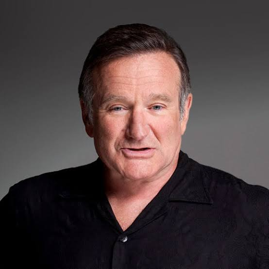

1951-2014
"Time is the best teacher, unfortunately, it kills all of its students."
Robin McLaurin Williams (July 21, 1951 – August 11, 2014) was an American actor and comedian. Known for his improvisational skills[1][2] and the wide variety of characters he created on the spur of the moment and portrayed on film, in dramas and comedies alike,[3][4] he is regarded as one of the greatest comedians of all time.[5][6][7] He received numerous accolades including an Academy Award, two Primetime Emmy Awards, six Golden Globe Awards, two Screen Actors Guild Awards, and five Grammy Awards.